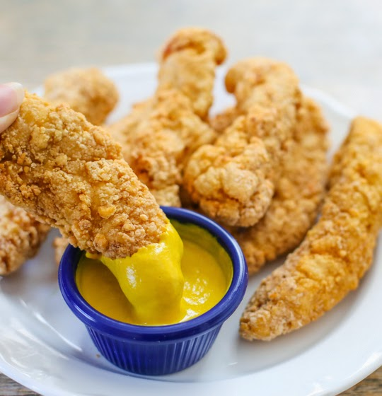

🏠 Home

Description
Chicken tenders are thin strips of boneless, skinless chicken breast that are typically breaded and fried.
They are often served with dipping sauces, such as ketchup, barbecue or buffalo sauce, or honey mustard.
Ingredients
- 1 1/2 pounds boneless chicken tenders
- 1/2 cup French's® Honey Mustard
- (6 oz.) can French's® Original Crispy Fried Onions
Instructions
- CRUSH Crispy Fried Onions in plastic bag with hands or rolling pin. Transfer to pie plate or waxed paper.
- BRUSH chicken with Honey Mustard making sure chicken is well coated.
- DIP chicken tenders one at a time into onion crumbs, pressing firmly to adhere on all sides. Place chicken on baking sheet.
- BAKE at 350°F for 20 minutes or until no longer pink in center.